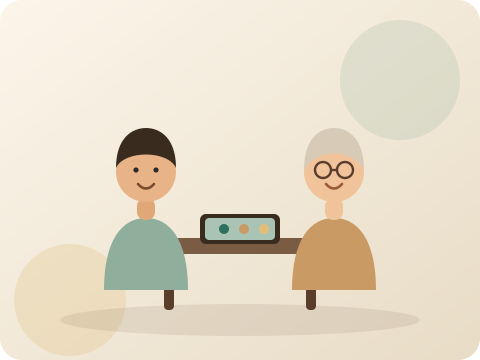
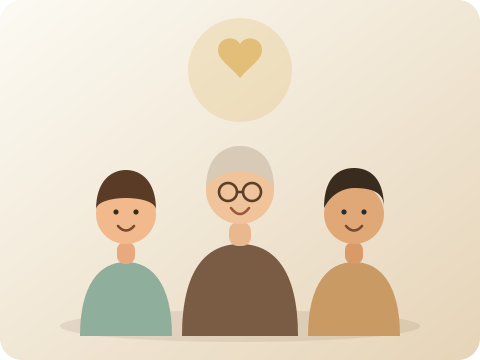
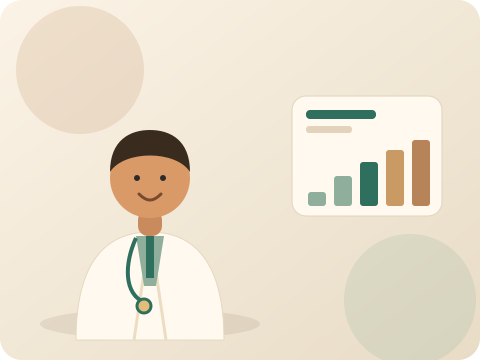
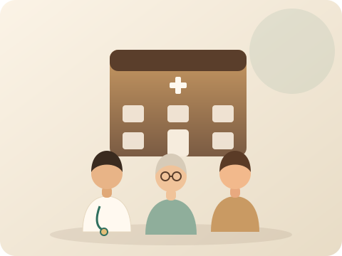

“So proud of you today, Dad. 💚”
Cognitive rehabilitation platform
NeuroBridge
NeuroBridge
A connected cognitive rehabilitation platform for patients, families, and care teams.
Daily cognitive activities, family memories, provider communication, appointments, and performance-only progress in one supportive platform.
5 cognitive games
4 connected roles
RTL Arabic & English
An academic prototype. Not a diagnostic medical system.
The platform
One connected platform for patients, families, and care teams.
Three connected experiences around one supportive daily journey — performance-only and always within safe, reviewed boundaries.

Patient daily practice
- Today's Therapy & guided activities
- Cognitive games with kind feedback
- Memory Album & performance-only progress

Family support and memories
- Encouragement & two-way provider chat
- Memory Center photo wall
- Appointments & performance-only reports

Provider review and coordination
- Assigned patients & appointments
- Provider messages & progress review
- Performance-only · non-diagnostic
Warm cognitive support stories
A calm, human approach to daily cognitive care
Gentle, everyday moments — supportive practice, family warmth, and safe provider review. Non-diagnostic and performance-only.
Every day is a new step
Small, steady daily practice — at a gentle pace.
Family support matters
Encouragement and memories keep everyone close.
Provider review with care
Performance-only review — non-diagnostic, pending care-team review.
Memory grows through stories
Family photos and moments nurture the Memory Tree.
Calm routines support practice
A soft, predictable rhythm makes each day easier.

Progress is reviewed safely
Readable, performance-only summaries support the care team.
For patients
A calm, elderly-friendly daily companion
Mobile-first with large buttons and an accessible, RTL-safe layout. Everything stays supportive and performance-only.
Today's TherapyCognitive GamesFamily Encouragement
Memory AlbumUpcoming AppointmentProgress
Request access
Good morning, Sami 🌿
Today's Therapy
Memory & focus
Start session →
68%
Games
Memory Tree
Progress
Family
Family encouragement“So proud of you today, Dad.”
Upcoming appointmentTherapy · Thu 10:00
For families & caregivers
The heart of NeuroBridge — families stay close and contribute
Scoped strictly to linked patients: encouragement, two-way provider messages, appointments, memories, and performance-only progress.
Provider chat
2 newCould we confirm Thursday's online time?
Yes — 10:00 works. Thank you!
Confirmed. See you then.
Memory wall
12 memoriesPhotos & stories that grow the Memory Tree.
Encouragement
Sent“Every small step counts. We're with you. 💚”
Appointments
Upcoming- Therapy · onlineThu 10:00
- Follow-up · in-personMon 09:30
Reports
WeeklyPerformance-only family summary, ready to print.
For doctors & therapists
Supportive oversight, never automated judgment
A web portal for assigned patients only. Everything is a performance-only review — not a medical diagnosis and not a medical assessment.
Assigned patients
6- S. NasserOn track
- L. OdehReview
- M. BarghoutiOn track
Provider messages
2 newQuick question about Thursday's plan.
Happy to help — replying now.
Appointment approval
Pending- Therapy · online · Thu 10:00Approve ✓
Progress review
TrendPerformance-only · not a medical assessment.
For clinics & medical centers
Coordinate care, with oversight and clear roles
Give your team a connected, role-scoped platform — while clinical judgment stays with your doctors and therapists.
- Manage providers and their availability
- Coordinate appointments across the team
- Support family involvement, safely scoped
- Review platform usage — performance-only
- Role-based access control across every role
- Reports for care-team discussion
Platform modules
Everything that makes up NeuroBridge
Purposeful modules with enforced boundaries — a shared, supportive journey rather than a single screen.
Patient App
Daily activities, games, memory album, progress.
Family Portal
Encouragement, messages, memories, appointments.
Doctor Portal
Assigned-patient review — performance-only.
Admin Portal
Users, roles, content, and audit oversight.
Provider Directory
Browse demo providers and filter by governorate.
Appointments
Book in-person or online care-coordination visits.
Provider Chat
Two-way non-urgent inquiries with providers.
Memory Center
Family photos, stories, and voice messages.
Memory Tree
A living tree that grows with memories & sessions.
Cognitive Games
Supportive exercises — game performance only.
Reports
Weekly and monthly performance-only summaries.
Security & RBAC
JWT, role-based access, and audit logs.
AI-Assisted Support
Suggestions that stay pending care-team review.
Provider directory & booking
Find a provider and request care coordination
A demo directory of local prototype providers — demo names only, no real clinicians and no real phone numbers. Filter by governorate and request an in-person or online visit.
Dr. Lina Haddad
Memory & attention support
In-personOnline
Dr. Sara Khalil
Cognitive care planning
In-personOnline
Therapist Omar Naser
Daily activity training
Online
Dr. Kareem Mansour
Cognitive follow-up
In-personOnline
Therapist Dana Saleh
Therapy support
In-personOnline
Dr. Hala Barghouti
Memory & attention support
In-personOnline
Demo providers are local prototype data — not real clinicians. The +970-… demo contacts are placeholders only.
Memory Center
The Memory Tree grows with love and practice
The tree grows as families contribute photos and messages, and blossoms with each completed session — a warm, shared symbol of progress.
Cognitive games
Supportive exercises — game performance only
Each game measures game performance only (score, duration, completion). It is performance-only practice and not a medical assessment.
Memory Match
Match pairs to practice short-term memory.
Memory Recall
Recall moments from the Memory Album.
Reaction Time
Tap quickly when the signal appears.
Attention Focus
Tap the target and ignore the rest.
Sequence Recall
Watch a sequence, then repeat it in order.
More categories
Language · Logic · Visual · Daily Activities.
Reports & analytics
Readable, performance-only reporting
Clear weekly and monthly summaries with simple charts — never a clinical score or medical interpretation.
Weekly report
Mon–SunSessions, completion, and average performance.
Monthly report
TrendMonth-over-month performance-only trend.
Summaries
Family · Doctor- Family summaryPlain language
- Doctor reviewPerformance-only
- Print / PDFShareable
AI-assisted support
Helpful suggestions — always within safe boundaries
NeuroBridge uses AI-assisted support as a helper, never an authority. Every output is a suggestion based on game performance only, and stays pending care-team review.
Activity suggestions
Gentle next-activity ideas based on performance-only signals.
Difficulty support
Suggests easing or advancing an activity — never forced.
Weekly summaries
Plain-language performance summaries for families and care teams.
Family coach tips
Supportive encouragement ideas for caregivers.
Pending by default
Nothing activates until a doctor or therapist approves it.
Safe boundaries
No scores, no labels, no autonomous clinical actions.
Safety boundary. AI-generated support recommendation.
Not a medical diagnosis and not a medical
assessment. AI-assisted suggestions stay pending
care-team review by a qualified doctor or therapist. NeuroBridge
is non-diagnostic and does not diagnose, predict, score, or treat any
condition.
Security & trust
Protecting sensitive data by design
Security is a first-class requirement, enforced at the API layer with privacy-minded defaults.
JWT authentication
Access tokens with refresh tokens.
Role-based access (RBAC)
Patient, family, doctor, therapist, and admin scopes.
Audit logs
Login, profile updates, notes, reports, and AI review.
Role-scoped data access
Families see linked patients; doctors see assigned patients.
Safe AI boundaries
AI stays pending care-team review — no autonomous actions.
Privacy-minded design
Hashed passwords and validated, size-limited uploads.
Resources
How NeuroBridge works
A simple, connected loop between daily practice, family support, and professional review.
Patient practices
Daily cognitive activities and games in the patient app.
Family supports
Encouragement, memories, and appointments from the Family Portal.
Providers review
Assigned providers review performance-only progress.
Reports support care
Readable reports support care-team discussion — non-diagnostic.
Use cases
Cognitive rehabilitation support
Structured, supportive daily practice.
Family participation
Encouragement, memories, and coordination.
Therapy follow-up
Between-visit continuity, performance-only.
Memory-based activities
Personal photos and stories as gentle prompts.
Provider communication
Non-urgent, two-way care-coordination messages.
Academic demo
A graduation-project prototype for review.
Join NeuroBridge
Request access & register your interest
This is a prototype site — it does not create real accounts yet. Tell us how you'd like to take part, and we'll follow up. Backend account creation will be connected in a later module.
Join as Doctor
Review assigned patients, appointments, and provider messages — performance-only.
Join as Therapist
Support therapy follow-up and coordinate supportive activities.
Join as Clinic
Manage providers, coordinate appointments, and review usage with RBAC.
Join as Family
Encourage, message providers, add memories, and follow progress.
Join as Patient
Practice daily activities and games with family and provider support.
Academic prototype
A graduation project — built to academic standards
NeuroBridge is a graduation project prototype. It is not a deployed clinical medical system, not a diagnostic medical system, and not a replacement for professional medical care — a research and education prototype with clean, modular architecture.
- Prototype, not a certified medical device
- Modular by domain — auth, patients, games, memory, reports, AI, audit
- Roadmap-driven across patient, family, doctor, admin, AI, and reports
Prototype feedback
What early demo reviewers imagined
Prototype feedback only — illustrative statements from demo reviewers of the graduation project. These do not represent real patients or any real clinical deployment.
“The family messages and encouragement make the whole journey feel warm and connected.”
“Performance-only progress is easy to read, and the pending-review boundary is reassuring.”
“The Memory Tree is a lovely idea — practice and family memories growing together.”
FAQ
Common questions
Is NeuroBridge a diagnostic system?
No. NeuroBridge is not a diagnostic medical system. It is non-diagnostic and does not diagnose, predict, score, or treat any condition. Activities measure game performance only.
Can doctors and therapists join?
Yes. Care teams use the Doctor Portal to review assigned patients — a performance-only review, not a medical diagnosis and not a medical assessment. Use the Join section to register interest.
Can families add memories?
Yes. Linked families can add photos, stories, and messages to the Memory Center, and send encouragement — family support only, not medical advice.
Can patients use it alone?
Patients can practice daily activities independently, but NeuroBridge is designed to connect them with family and care-team support. It never replaces professional care.
Is AI making medical decisions?
No. AI is AI-assisted support only; suggestions stay pending care-team review, and clinical judgment always stays with qualified professionals.
Can clinics request a demo?
Yes. Clinics and medical centers can register interest in the Join section. This prototype site does not create accounts yet — we follow up by email.
Is this a real deployed medical system?
No. NeuroBridge is an academic prototype — not a deployed clinical medical system and not a replacement for professional medical care.
NeuroBridge connects daily cognitive practice with family support and professional review.
Register your interest for a walkthrough of the patient app, the family and doctor portals, and the roadmap.
Academic prototype · Non-diagnostic · Not a diagnostic medical system
The team
Meet the Developers
Designed and developed as a graduation project by Computer Engineering students at An-Najah National University.
سماح هاني صوان
Computer Engineering · An-Najah National University
تالا اسعد دويكات
Computer Engineering · An-Najah National University